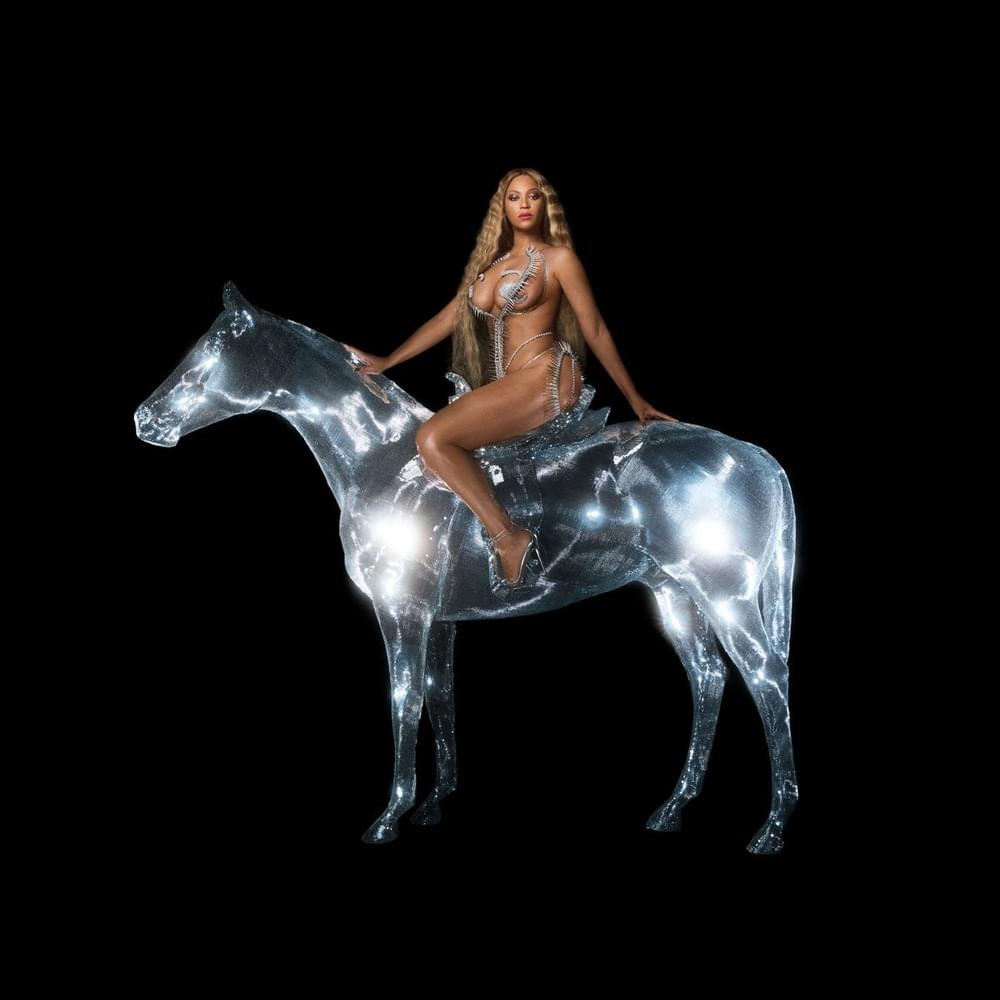
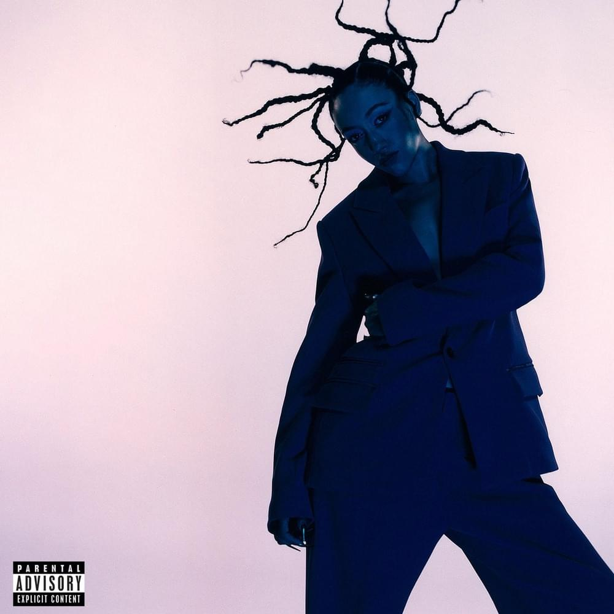
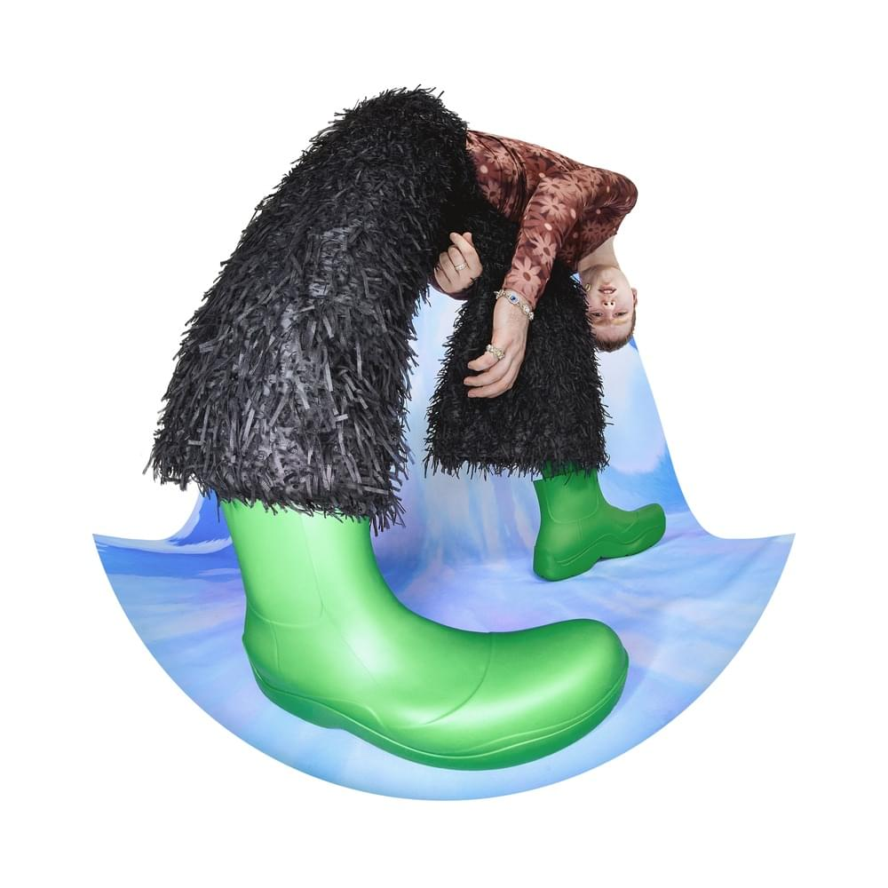
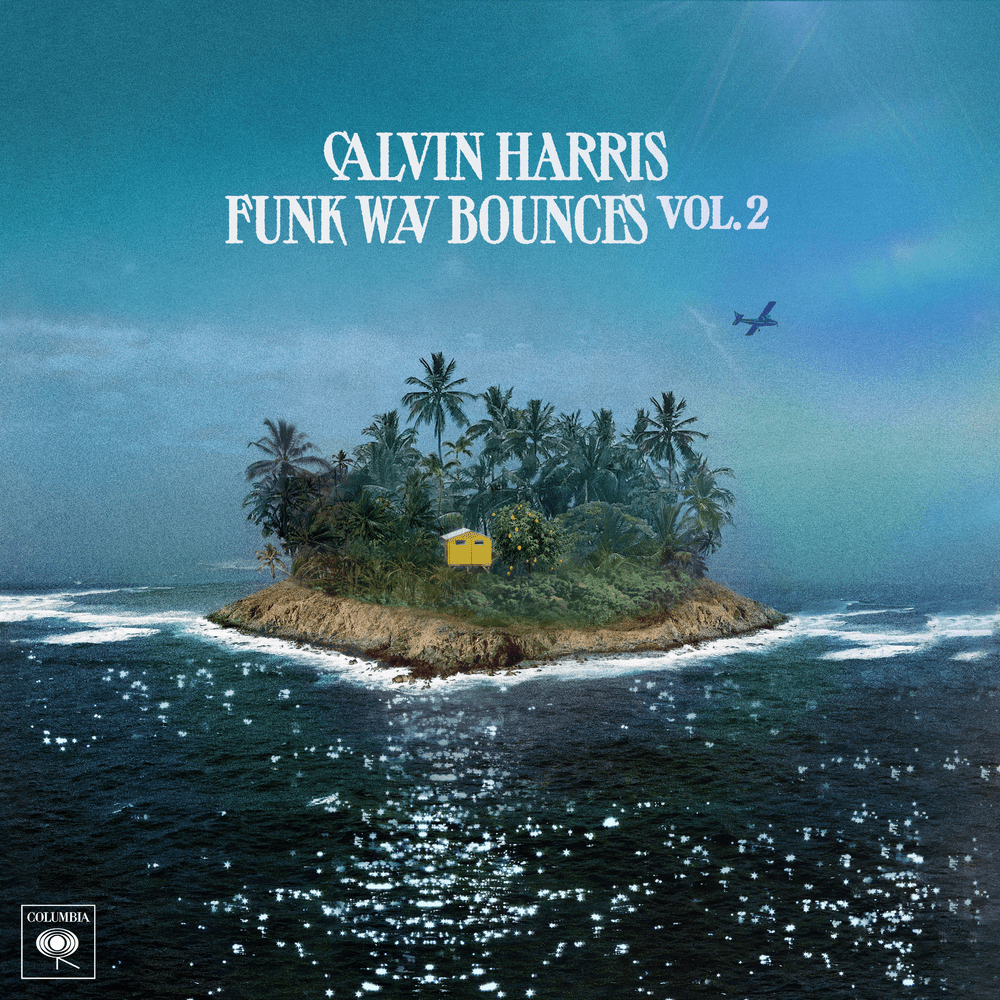
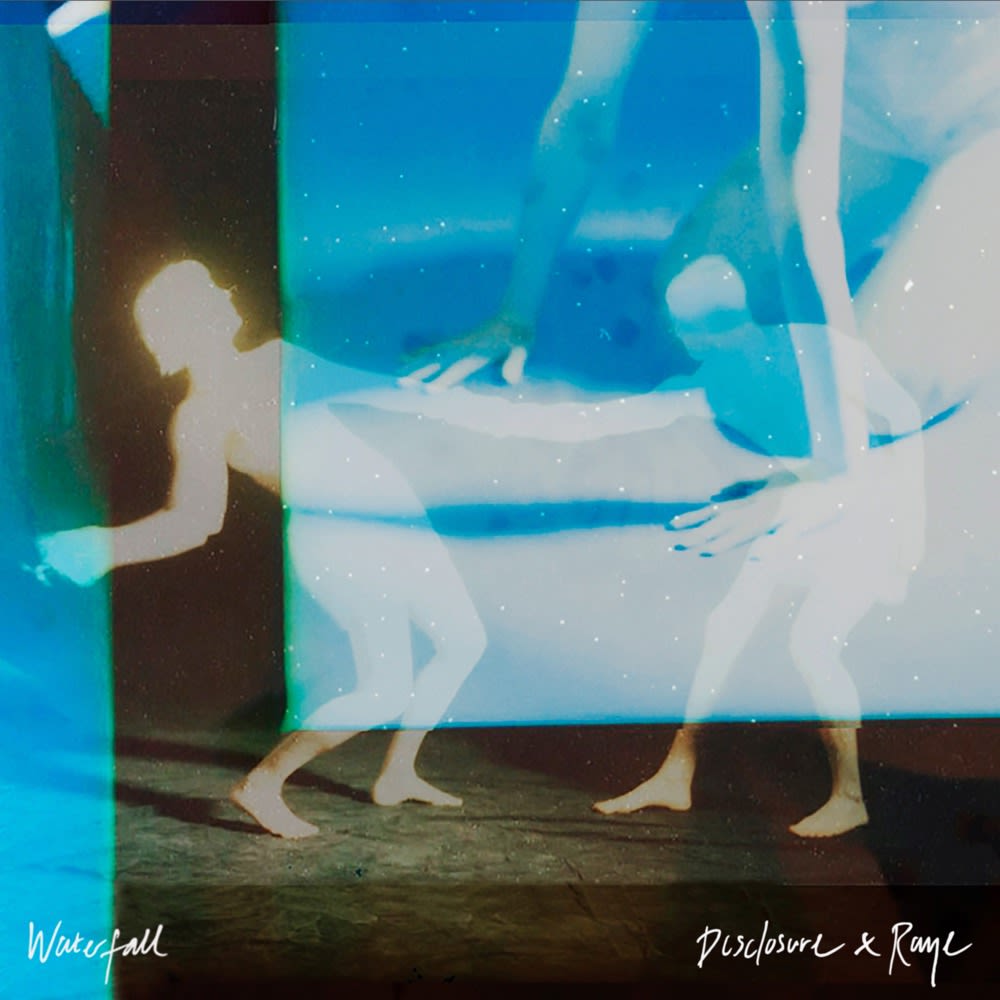
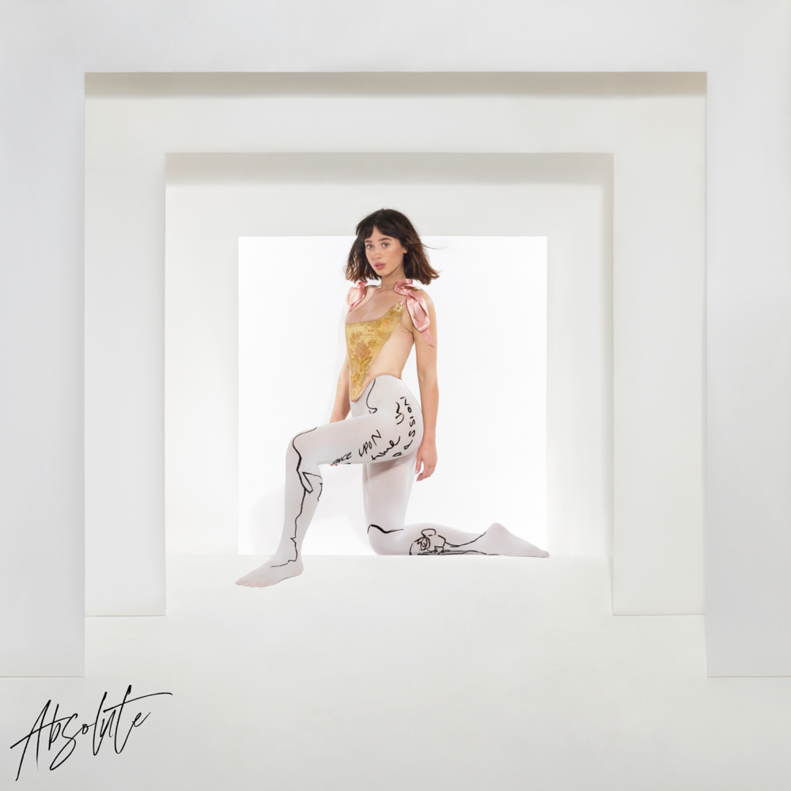
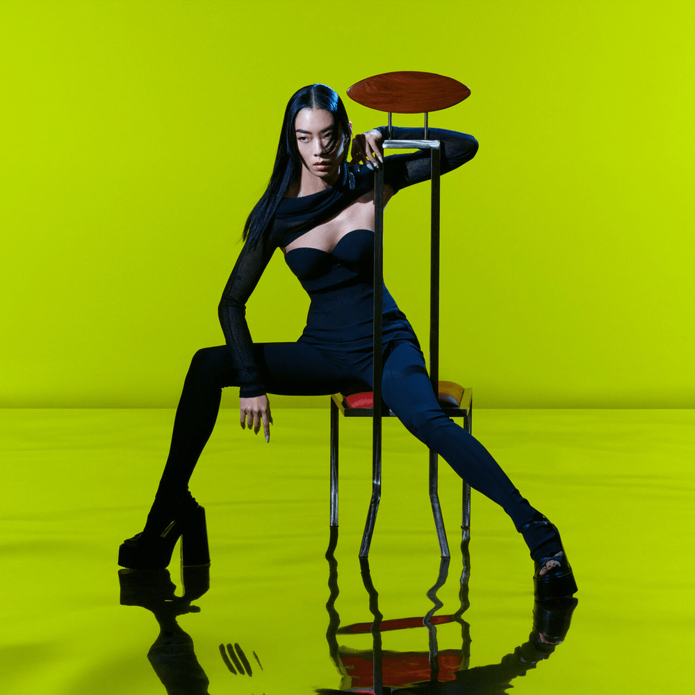
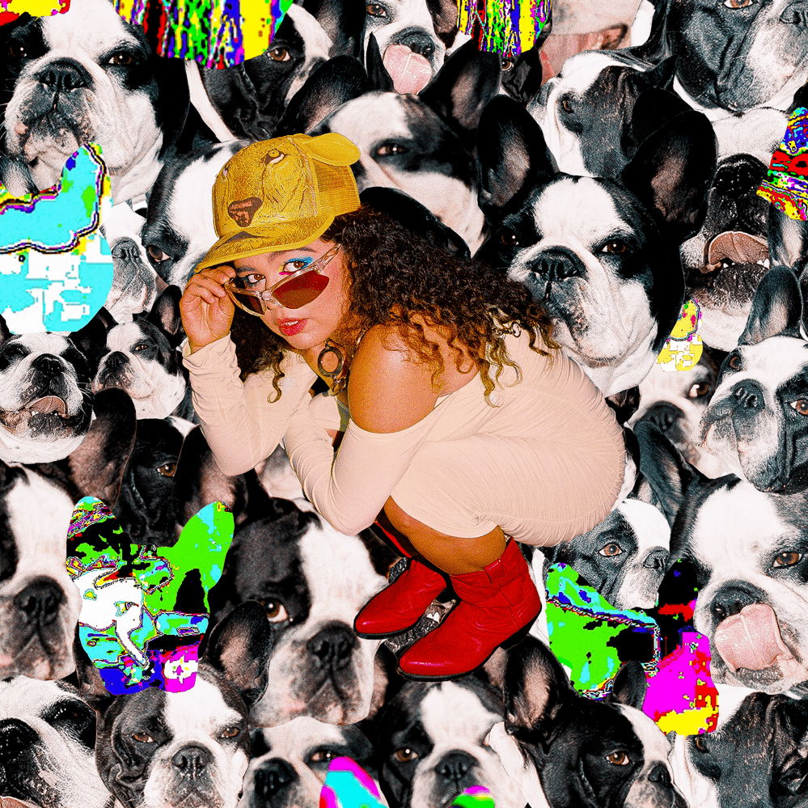
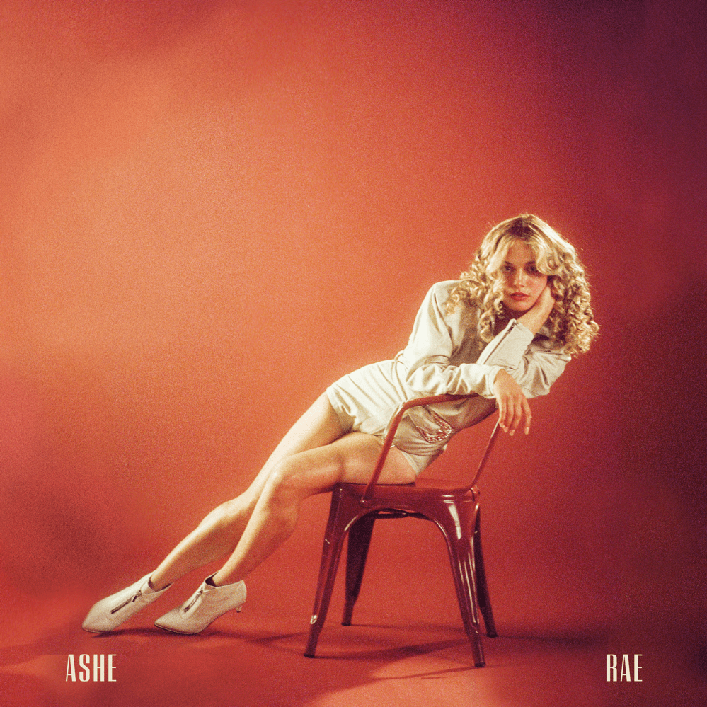
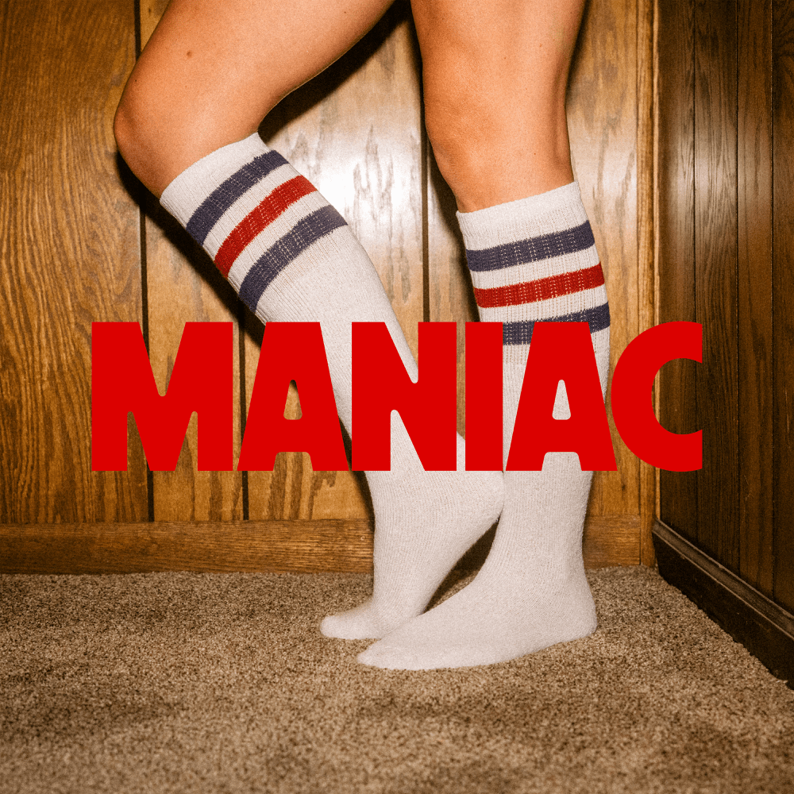

TRACKLIST
- which way - FKA twigs (feat. dystopia)
- PURE/HONEY - Beyonce
- 2NLuv - Jenevieve (feat. Benziboy)
- e-motions - Mura Masa (feat. Erika de Casier)
- Stay With Me - Calvin Harris (feat. Halsey, Pharrell Williams and Justin Timberlake)
- Waterfall - Disclosure (feat. RAYE)
- Absolute - Foxes
- Hurricanes - Rina Sawayama
- Sugar - Remi Wolf
- Emotional - Ashe
- MANIAC - Macklemore (feat. Windser)
- SUBSTANCE - Demi Lovato
1. which way - FKA twigs (feat. dystopia)
[Intro]
This is, like, the perfect music to think
Hahaha Yeah
It's like elevator music, but you're going to the fiftieth floor
Mmm, made me realise I have no thoughts though
[Verse]
Da-da-di-da-do-do-do, I don't know which way to go
Which way to go
When I was walkin' through the London city lights
I met the devil and he smiled at me and said, "You're going the wrong way"
(If you never know yourself, you never know, never find)
Your thumbs are idle and they're all mine
Feelings will hurt
Did I say that out loud?
Put my feelings on you
To find out which way should I go
Da-da-di-da-do-do-do, I don't know which way to go
Da-da-di-da-do-do-do, I don't know which way to go
Which way to go
When I was walkin' through the London city lights
I met the dеvil and he smiled at me and said, "You'rе going the wrong way"
(If you never know yourself, you never know, never find)
Your thumbs are idle and they're all mine
Da-da-di-da-do-do-do, I don't know which way to go
I am so perfect
Da-da-di-da-do-do-do, I don't know which way to go
Did I say that out loud?
[Outro]
One, two, three, hey
I had a good job and I left (Yee)
I had a good job and I left
I left because I thought it was right
Left, right, left, right
Da-da-di-da-do-do-do, I don't know which way to go
(Left, right, left, right, left, right, left, right)
Which way to go
I learnt on Twitter
Da-da-di-da-do-do-do, I don't know which way to go
There's the whole "I want to be a rockstar's girlfriend"
But yeah, the difference between (Rockstar's girlfriend?)
Me and all those tweets is that
You're not like those
I'm the rockstar, not my boyfriend
I'm not the rockstar's girlfriend, I am the rockstar girlfriend
Do you get what I mean?
Mm-hm, the girlfriend who is a rockstar
Like, I'm not the accessory to the rockstar, I'm the rockstar
Do you get what I mean?

2. PURE/HONEY - Beyonce
[Verse 1: Beyonce]
Bad bitches to the left
Money bitches to the right
You can be both, meet in the middle, dance all night
Take it all off or just a little if you like, it's pure (Uh)
It should cost a billion to look this good (Oh, yeah)
But she make it look еasy 'cause she got it (Check my tеchnique)
You can find the one when the tempo good (Wanna touch my technique)
Four, three, too fucking busy
That's my technique
That's my, that's my, that's my technique
Bad bitch, bisous
Right then left cheek, mwah
Ideas, my dear, that's my technique, uh
All my pretty girls to the floor
[Chorus: Beyonce]
Get your money, money, cunty, hunty
Don't be funny with my money, honey
Don't my girls look so yummy, yummy?
All the boys want my honey from me
It should cost a billion to look that good
But she make it look easy 'cause she got it
You can find the one when the tempo's good
Four, three, I'm too fucking busy
[Verse 2: Beyonce]
Check my technique
I see you, you, too
Coming for my technique, uh
Bossy bitch, bisous
Right then left cheek, mwah
Future, renaissance
Study my technique, uh
All the pretty boys to the floor
[Chorus: Beyonce]
Get your money, money, cunty, hunty
Don't be funny with my money, honey
Don't my girls look so yummy, yummy?
All the boys want my honey from me
It should cost a billion to look that good
But she make it look easy 'cause she got it
You can find the one when the tempo's good
Four, three, I'm too fucking busy
[Part II: HONEY]
[Intro: Beyonce]
I see you want it and you're coming for me
Don't be funny with my money, honey
All my girls look so yummy, yummy
And all the boys want my honey from me
[Verse 1: Beyonce]
The devil's on my shoulder (It's taboo as you want it)
Nasty is my guilty pleasure (Nasty, nasty girl)
If you give this ass a squeeze (Give that ass a squeeze, baby)
It's pretty how I'll give you pleasure (Pretty, pretty hell)
[Pre-Chorus: Beyonce]
Once you get me piped up, baby, I won't stop
Uh, I won't stop 'til you say you had enough
Ride it like a rodeo when I'm on top, uh, uh
[Chorus: Beyonce]
I'll get you stuck (Stuck), stuck in my love (Stuck in my love)
Stuck in my honey
Honey, honey, hon'
I'll put the sweet (Sweet), sweet on your tongue (Sweet on your tongue)
Don't it taste yummy? (Yummy)
Yummy, yummy, yum
Now stick it thick (Thick), honey and gold (Honey and gold)
Drip it all on me, yeah
Honey, honey, hon'
I'll put the sweet (Sweet), sweet on your tongue (Sweet on your tongue)
Don't it taste yummy? (Yummy)
Yummy, yummy, yum
[Post-Chorus: Beyonce]
Ooh, yeah, yeah (Yummy, yummy, yum)
Ooh, yeah, yeah (Yummy, yummy, yum)
[Verse 2: Beyonce]
You know it's Friday night and I'm ready to drive
Throw me them keys, baby, let's go
(It's Friday night and I'm ready to drive)
(Throw me them keys, baby, let's go)
We jump in the car, quarter tank of gas
World's at war, low on cash
(We jump in the car, quarter tank of gas)
(World's at war, low on cash)
I ain't never felt a feeling like this
You've been in love, but not like this
Sweet, honey, sin, taste it on your lips
Up and down on it, light switch, click
[Outro: Moi Renee & Beyonce]
Honey, Miss Honey
Miss Honey, Miss Honey
Honey, honey, hon'
Miss Honey, Miss Honey
Miss Honey, Miss Honey

3. 2NLuv - Jenevieve (feat. Benziboy)
[Intro]
If I'm all you need
Yeah
[Refrain]
I've been in too deep
And can't go walking away
My love will never sleep
Compel me
[Pre-Chorus]
If I'm all you need
Then don't go walking away (Don't walk away)
My love will never cease
So tell me
[Chorus]
Baby, keep talking that
Baby, keep talking that
Baby (Ooh-oh), keep talking that
Baby
[Pre-Chorus]
If I'm all you need (Oh)
Then don't go walking away (Don't you go running from me)
My love will never cease (Oh)
So tell me (Love you)
[Chorus]
Baby, keep talking that
Baby, keep talking that
Baby (Ooh-oh), keep talking that
Baby (Love you)
[Break]
(Love you)
(Love you)
[Refrain]
I've been in too deep
And can't go walking away (My love will never—)
My love will never sleep
Compel me (Love you)
[Outro]
Baby, let's go there
Somewhere I don't care
Baby, you can be my fantasy (You can be my—)
Baby, let's go there
Somewhere I don't care (Don't care)
Baby, you can be my fantasy (You can be my—)

4. e-motions - Mura Masa (feat. Erika de Casier)
[Intro]
(Mura)
[Verse 1: Erika de Casier]
I'd cross the ocean
You wouldn't even jump puddles for me
I cared with devotion (Devotion)
You didn't, that was easy to see
[Chorus: Erika de Casier]
You don't see, you don't think of my emotions
Might as well leave you be, it's not like you'll notice
You don't see, you don't think of my emotions
Like you care
[Drop: Erika de Casier]
(My emotions)
(Keep all the memories)
I'm just lookin' out for myself (For myself, for myself)
Instead of lookin' down, I'll keep my head up (My emotions)
I'm just lookin' out for myself (For myself, for myself)
Instead of lookin' down, I'll keep my head up
(Keep all the memories)
[Verse 2: Erika de Casier]
Shut my eyes so I won't see
The love you don't feel when you're with me (You're with me)
Shut my eyes so I won't see
The love you don't feel when you're with me (You're with me)
[Chorus: Erika de Casier]
You don't see, you don't think of my emotions
Might as well leave you be, it's not like you'll notice
You don't see, you don't think of my emotions
Like you care
[Drop: Erika de Casier]
(My emotions)
(Keep all the memories)
I'm just lookin' out for myself (For myself, for myself)
Instead of lookin' down, I'll keep my head up (My emotions)
I'm just lookin' out for myself (For myself, for myself)
Instead of lookin' down, I'll keep my head up
(Keep all the memories)
[Outro: Erika de Casier]
I'm just lookin' out for myself (Mmm, demon time)
Instead of lookin' down, I'll keep my head up
I'm just lookin' out for myself (For myself, for myself)
Instead of lookin' down, I'll keep my head up

5. Stay With Me - Calvin Harris (feat. Halsey, Pharrell Williams and Justin Timberlake)
[Chorus: Halsey]
Hey, it's a mess out there
They can leave, but we don't care
We'll stay, I'm good right here
I been waitin' for you all year
Come play, make a mess right here
Do whatever, I like it weird
Okay, let 'em disappear
Say whatever you want to hear
Just stay
[Segue: Justin Timberlake]
(Dance)
(Dance)
(Dance)
Lookie here
[Verse 1: Justin Timberlake]
They said, "Please, turn it down"
I said, "Just turn around"
They say it's dark, but what do they know?
So upliftin' how you bounce
[Refrain: Justin Timberlake & Halsey]
And it feel like, damn (Damn)
Look at those pants
Damn (Damn)
It don't makе sense
Damn (Damn)
Yeah, I'm convincеd
Blam (Blam)
It's magic
[Pre-Chorus: Pharrell Williams]
This one's for tonight and beyond (Come here, girl)
We toastin' and we cheers, all your girls are here
Somethin' ain't right if you yawn (Yeah, girl)
As crazy as it sound, wanna take you down
So you can feel the pipe 'til the dawn (Yeah, girl)
The energy is flowin', it keeps us glowin'
So we don't need no light, why's it on? (Yeah, girl)
I'm talkin' to you, girl, it's a new world
[Chorus: Halsey]
Hey, it's a mess out there
They can leave, but we don't care
We'll stay, I'm good right here
I been waitin' for you all year
Come play, make a mess right here
Do whatever, I like it weird
Okay, let 'em disappear
Say whatever you want to hear
Just stay
[Post-Chorus: Justin Timberlake]
All night
Come on and stay with me
Let's take flight
Come on and stay, baby
We could fly away, girl
Come on and stay with me
All night
Come on and stay with me
[Verse 2: Justin Timberlake]
I still see your body in the dark
It's easy, I just use my hands
And I don't even need to go inside
I know just by the way you dance
[Refrain: Justin Timberlake & Halsey]
(Damn)
Look at those pants
Damn (Damn)
It don't make sense
Damn (Damn)
Yeah, I'm convinced
Blam (Blam)
It's magic
[Pre-Chorus: Pharrell Williams]
This one's for tonight and beyond (Come here, girl)
We toastin' and we cheers, all your girls are here
Somethin' ain't right if you yawn (Yeah, girl)
As crazy as it sound, wanna take you down
So you can feel the pipe 'til the dawn (Yeah, girl)
The energy is flowin', it keeps us glowin'
So we don't need no light, why's it on? (Yeah, girl)
I'm talkin' to you, girl, it's a new world
[Chorus: Halsey]
Hey, it's a mess out there
They can leave, but we don't care
We'll stay, I'm good right here
I been waitin' for you all year
Come play, make a mess right here
Do whatever, I like it weird
Okay, let 'em disappear
Say whatever you want to hear
Just stay
[Post-Chorus: Justin Timberlake]
All night
Come on and stay with me
Let's take flight
Come on and stay, baby
We could fly away, girl
Come on and stay with me
All night
Come on and stay with me

6. Waterfall - Disclosure (feat. RAYE)
[Verse 1]
I only see you and I
In a crowded room, you’re my decision
Oh, we been blurrin' the lines
In a crowded room, I guess I kissed him, kissed him
[Pre-Chorus]
Oh, now, baby, hold on, hold on
Pushed you back for so long, oh
And I’m all out of good excuses now, baby
Alright, alright
I can’t wait one more night, oh
I give up, I give in, I can’t take it
[Chorus]
Won’t you please
Pour your loving over me
All your loving over me
Like a waterfall baby
Won’t you please
Pour your loving over me
All your loving over me
I need you to
Let your water fall
Oh, baby, let me feel it all
[Verse 2]
This may be a mistake
But I want your tattoos on my shoulders
If you was bourbon and pain, mhm
I’d raise you to the sky and toast this, hopeless
[Pre-Chorus]
Oh, now, baby hold on, hold on
Pushed you back for so long, oh
And I’m all out of good excuses now, baby
Alright, alright
I can’t wait one more night, oh
I give up, I give in, I can’t take it
[Chorus]
Won’t you please
Pour your loving over me
All your loving over me
Like a waterfall baby
Won’t you please
Pour your loving over me
All your loving over me
I need you to
Let your water fall
Oh, baby, let me feel it all (Yeah)
[Bridge]
Give me something to live for
Give me something to love
Give me someone to hold on to
I’ll put nothing above
Give me something to live for
Give me something to feel
Give me something to hold on to
Give me something that’s real
[Verse 3]
Never had a lover like you, no
It’s the kind of lovin' I do want
Settled so I’m settling
Love him and I’m tellin' him
Got a good girl in her element, yeah
Never had a lover like you, no
It’s the kind of lovin' I do want
Settled so I’m settling
Love him and I’m tellin' him
Got a good girl in her element
[Chorus]
Won’t you please
Pour your loving over me
All your loving over me
Like a waterfall baby
Won’t you please
Pour your loving over me
All your loving over me
I need you to
Let your water fall
Oh, baby, let me feel it all (Yeah)
[Outro]
Won’t you let your
Won’t you let your
Won’t you let your
Waterfall
Won’t you let your
Won’t you let your
Won’t you let your

7. Absolute - Foxes
[Verse 1]
Fall into the morning
Fade into the evening
Midnight, take it all in
Ready to believe again
[Pre-Chorus]
Our time you can measure on a feeling
Feels like I'm looking at my body from the ceiling
This time I think I wanna lose control
[Chorus]
Is it moving you, moving you, moving you?
I got this feeling all around me
And it’s absolute, absolute, absolute
This new synergy
You and me
Every time we come together
Every time we come together
[Verse 2]
Hello, missed you, all time
Don't need to understand it (Don't need to understand it)
Visions colour my mind
And you arе where I’m landing (You are whеre I'm landing)
[Pre-Chorus]
Our time you can measure on a feeling
Feels like I'm looking at my body from the ceiling
This time I think I wanna lose control
[Chorus]
Is it moving you, moving you, moving you?
I got this feeling all around me
And it’s absolute, absolute, absolute
This new synergy
You and me, every time
Is it moving you, moving you, moving you?
I got this feeling all around me
And it’s absolute, absolute, absolute
This new synergy
You and me
Every time we come together
Every time we come together
(Every time we come together)
Every time we come together
[Pre-Chorus]
Our time you can measure on a feeling
Feels like I'm looking at my body from the ceiling
This time I think I wanna lose control
[Chorus]
Is it moving you, moving you, moving you?
I got this feeling all around me
And it’s absolute, absolute, absolute
This new synergy
You and me, every time
Is it moving you, moving you, moving you?
I got this feeling all around me
And it’s absolute, absolute, absolute
This new synergy
You and me
Every time we come together

8. Hurricanes - Rina Sawayama
[Verse 1]
April showers finally making way for warmer weather
But yet I still feel the same
Doing yoga just to feel untethered, but my mind keeps
Ru-ru-ru-running away
[Pre-Chorus]
Chasing hurricanes
'Cause I can’t feel the rain
Second guess my pain
'Cause I've been walking around in chains
[Chorus]
So won’t you give me a sign if you're really there?
'Cause I've been lost inside waiting on a prayer
Until I find your door, until the wind blows north
I'm running, I'm running, running into hurricanes
[Verse 2]
Always wanted to be best at everything
Even when it brings out the worst in myself (Worst in myself)
So I create a storm and bury it deep, hiding the key
In plain sight just in case I need help, help
[Pre-Chorus]
Chasing hurricanes
'Cause I can't feel the rain
[Chorus]
So won’t you give me a sign if you’re really there?
'Cause I’ve been lost inside waiting on a prayer
Until I find your door, until the wind blows north
I'm running, I'm running, running into hurricanes
So won't you give me a ride? Be my getaway
I’m not the girl I tried to be yesterday
Until I find your door, until the wind blows north
I'm running, I'm running, running into hurricanes
[Bridge]
Oh, I'm in a cyclone, I'm spinning
Crashed through the floor
Don't give me heaven, I'm flying
Tearing down the doors of this city
Ooh, you know I'm running, I'm running
Running into hurricanes
[Chorus]
So won't you give me a sign if you're really there?
'Cause I've been lost inside waiting on a prayer
Until I find your door, until the wind blows north
I'm running, I'm running, running into hurricanes
So won't you give me a ride? Be my getaway
I'm not the girl I tried to be yesterday
Until I find your door, until the wind blows north
I'm running, I'm running, running into hurricanes

9. Sugar - Remi Wolf
[Chorus]
Summertime under the neon lights
Buy me Six String
A burger and fries
Cruisin' around in your drop-top ride
Call it city living
Wintertime under the harvest moon
Newborn baby and my skin's so smooth
I haven't seen you and I don't care to
[Post-Chorus]
Rehabilitation is
So sugary sweet
So hard to beat
Getting back up on my feet
Sweet as candy
So sugary sweet
So hard to beat
Getting back up on my feet
Sweet as candy
[Verse 1]
It's hard to believe that we've been together for so long
Holding my breath 'till the color in my skin was gone
Convince me, baby, we will never find a love this strong
[Pre-Chorus]
It's funny how the seasons change
And nothing really stays thе same, it went from
[Chorus]
Summertimе under the neon lights
Buy me Six String
Aa burger and fries
Cruisin' around in your drop-top ride
Call it city living
Wintertime under the harvest moon
Newborn baby and my skin's so smooth
I haven't seen you and I don't care to
[Post-Chorus]
Rehabilitation is
So sugary sweet
So hard to beat
Getting back up on my feet
Sweet as candy
[Bridge]
I don't believe in anything
Astrology don't prove a thing
Whatever you may bring
That's all on you
I keep secrets to myself
Like books upon a shelf
You're wildfire to my health
[Pre-Chorus]
It's funny how the seasons change
And nothing really stays the same, it went from
[Chorus]
Summertime under the neon lights
Buy me Six String
A burger and fries
Cruisin' around in your drop-top ride
Call it city living
Wintertime under the harvest moon
Newborn baby and my skin's so smooth
I haven't seen you and I don't care to
[Outro]
Rehabilitation is
Summertime (It's funny how the seasons change)
Neon lights (And nothing really stays the same)
Summertime (Funny how the seasons change)
Neon lights (And nothing really stays the same)
Summertime (It's funny how the seasons change)
Neon lights (And nothing really stays the same)

10. Emotional - Ashe
[Intro]
(One, two, three, go)
[Verse 1]
I don't wanna run you over heavy on the gas
I'm a million miles an hour and I'm never coming last
Hey, hey-hey
Saw you in the distance, there was something in the room
Could've been the music or it could've been the moon
Hey, hey-hey
[Pre-Chorus]
No, we
Don't
Have
To get emotional (Ooh-ooh, ooh-ooh)
No, we (We)
Don't (Don't)
Have (Have)
To get emotional
[Chorus]
You'll never love somebody like me
You'll never love somеbody like me
You'll nevеr love, you'll never love
You'll never love somebody like me
You'll never love somebody like me
And you could be somebody I need
You'll never love, you'll never love
You'll never love somebody like me (Hey-hey-hey)
(Hey-hey-hey)
[Verse 2]
You don't have to stay the night, only if you want
I'm a little dark side, I'm a little fun
Hey, hey-hey
Used to like the drama, baby, I don't anymore
If you got some trouble, baby, leave it at the door
Hey, hey-hey (Ooh-ooh, ooh-ooh)
[Pre-Chorus]
No, we (We)
Don't (Don't)
Have (Have)
To get emotional
[Chorus]
You'll never love somebody like me
You'll never love somebody like me
You'll never love, you'll never love
You'll never love somebody like me
You'll never love somebody like me
And you could be somebody I need
You'll never love, you'll never love
You'll never love somebody like me
[Outro]
You'll never love somebody like me
You'll never love somebody like me
You'll never love, you'll never love
You'll never love somebody like me
You'll never love somebody like me
And you could be somebody I need
You'll never love, you'll never love
You'll never love somebody like me

11. MANIAC - Macklemore (feat. Windser)
[Chorus: Windser]
I don't wanna dance with a maniac
'Cause the moment we touch, it's a heart attack
You know I love you, honey, but you got me runnin', yeah
I could give a damn, you're a maniac
And you're talkin' like a killer, got me on my back
You know I love you, honey, but you got me runnin', yeah
[Verse 1: Macklemore]
I fell in love with her moonwalk
Dancin' in the kitchen in her tube socks
I shoulda saw the signs, but refused, dawg
How am I supposed to ever move on?
Why is this so complicated? You said that you didn't love me
Said you workin' on yourself, you ain't been to therapy since 2020
Somethin' isn't right, see it in your eyes
Always give advice, never takin' mine
When I say goodnight, I'm thinkin'
[Pre-Chorus: Macklemore & Windser]
Ooh-ooh-ooh-ooh
You get on my nerves, I'm a foo-ooh-ooh-ool
You better reimburse all the things you do-ooh-ohh
Put me in a hearse, we both coo-coo-coo-cool
It's never gonna work
[Chorus: Windser]
I don't wanna dance with a maniac
'Cause the moment we touch, it's a heart attack
You know I love you, honey, but you got me runnin', yeah
I could give a damn, you're a maniac
And you're talkin' like a killer, got me on my back
You know I love you, honey, but you got me runnin', yeah
[Verse 2: Macklemore]
I think we need some space, I think we need a break
I think I need to move, I think this isn't safe
Why the hell you follow me to Walmart?
Gotta know everything, you ain't Nardwuar
Dress up on Friday nights, turn up 'til Sunday mornin'
I'm Mr. Probably Right, ignorin' all the warnings
I shouldn't wanna kick it, too many red flags
I knew you were problematic 'cause all of your exes are mad
Somehow, I'm back in your arms, told you, "Get back in my car"
I know you don't really love me, you deserve actin' awards
As long as the night is young, go crazy, I got your back
I'll be posted by the jukebox watchin' you dance, thinkin'
[Pre-Chorus: Macklemore & Windser]
Ooh-ooh-ooh-ooh
You get on my nerves, I'm a foo-ooh-ooh-ool
You better reimburse all the things you do-ooh-ohh
Keep me down to Earth, we're both coo-coo-coo-cool
But somehow it works, let's go
[Chorus: Windser]
I don't wanna dance with a maniac
'Cause the moment we touch, it's a heart attack
You know I love you, honey, but you got me runnin', yeah
I could give a damn, you're a maniac
And you're talkin' like a killer, got me on my back
You know I love you, honey, but you got me runnin', yeah
[Outro: Windser]
I don't wanna dance with a maniac
'Cause the moment we touch, it's a heart attack
You know I love you, honey, but you got me runnin', yeah
12. SUBSTANCE - Demi Lovato
[Verse 1]
Is anybody happy with life in the backseat?
Trying to master the art of detaching
Is anybody driving? Is anyone asking?
Is anyone grasping that nothing lasts?
[Pre-Chorus]
Woah
I know we're all fucking exhausted
Woah
Am I in my head or have we all lost it?
[Chorus]
So I ask myself
"Am I the only one looking for substance?"
Got high, it only left me lonely and loveless
Don't wanna end up in a casket, head full of maggots
Body full of jack shit, I get in abundance
Am I the only one looking for substance?
[Verse 2]
I don't remember last week, got my head scratching
But everyone's acting like nothing is lacking
I think we might be crashing, everyone's laughing
Time is just passing, yet nothing lasts
[Pre-Chorus]
Woah
I know we're all fucking exhausted
Woah
Am I in my head or have we all lost it?
[Chorus]
So I ask myself
"Am I the only one looking for substance?"
Got high, it only left me lonely and loveless
Don't wanna end up in a casket, head full of maggots
Body full of jack shit, I get in abundance
Am I the only one looking for substance?
[Bridge]
Am I talking to myself?
Is anyone out there screaming at the walls?
I can't relate at all, relate at all
Fuck the theatrics, what happened to classic?
Give me the real shit, give me the magic
[Chorus]
So I ask myself
"Am I the only one looking for substance?"
Got high, it only left me lonely and loveless
(Don't wanna end up in a) Casket
(Head full of) Maggots
(Body full of) Jack shit
(I get in) Abundance
Am I the only one looking for substance?
[Outro]
Yeah, yeah
Yeah, yeah, yeah